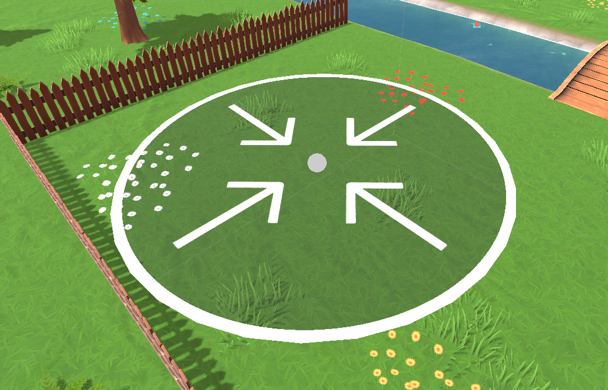
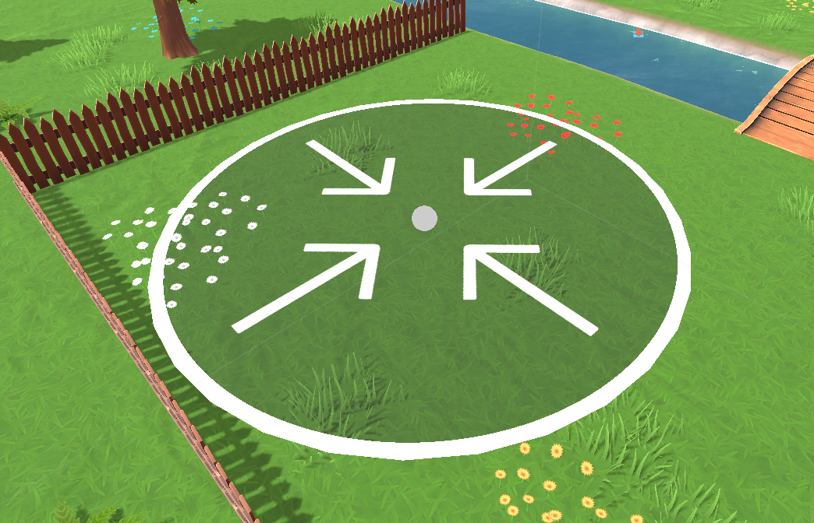
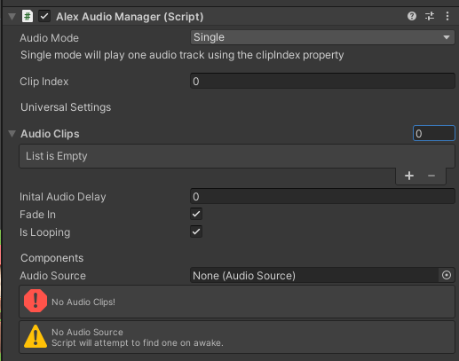
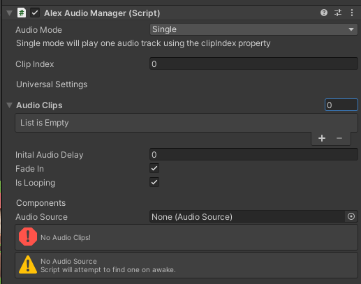
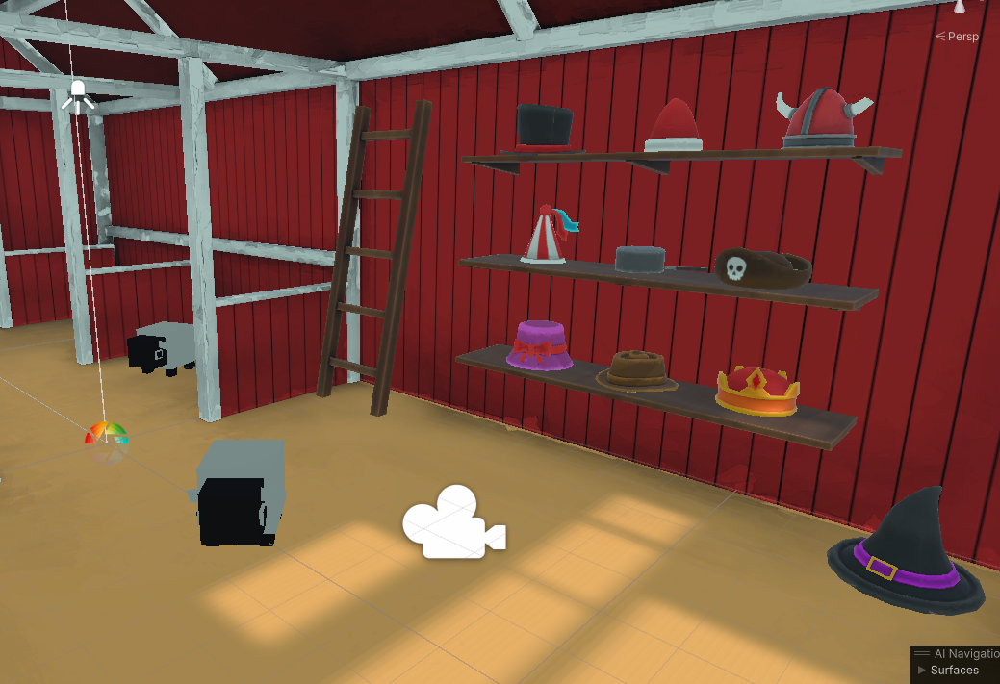
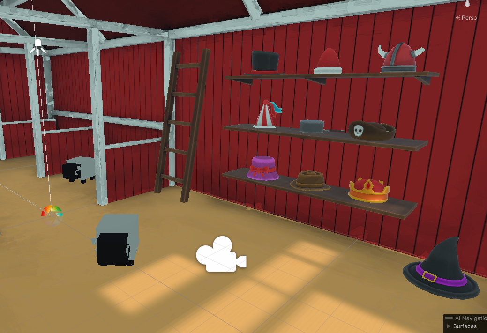

Oh, Flock!
Shaders, Audio and SHEEP DESTROYER!
Project Date: January 2024 - Current
Description
Here is a fun project that I feel lucky to be able to work on. Initially my contribution was to be Audio Design, however after occasionally helping the lead developer with other tasks my role in the project was extended, now I am not only working on audio design but shaders and additional programming as well. For the demo I have worked on two shaders and three scripts. Of the two shaders one implemented the use of sprite sheets and SDFs (Image 4) whilst the other was a modified standard shader to add a tint mask which allows the tinting of individual portions of the material instead of the tint affecting every part indiscriminately.
The three scripts I have been working on are a Settings Manager, an as of yet unseen Customisation Manager, and an Audio Manager. The Settings Manager makes exhaustive use of PlayerPrefs to save custom settings that Unity doesn’t keep track of. Once this system is functional, I also have plans to write a custom save-load system that works in tandem with it.
The Customisation Manager -although not in the demo build- handles setting the colour of the sheep’s wool as well as giving them little hats, I’m handling this using a ScriptableObject that contains a global list of hats which a manager uses to see which hats are available to the player.
Finally, the audio manager, which whilst fun to write did suffer some feature creep during development, in the end becoming less of a “manager” and more of a controller for audio sources. Rather than having a single instance of this script to control all audio sources, there is one controller per audio source. Each controller has an Enum to determine its mode (Single, Queue, Random), when the Start Method is run, respective functions are called depending on the current mode, each mode having unique variables associated with them, because of this, I thought it necessary to write a custom inspector for the script. This inspector hid any variables not associated with the mode and displayed errors and warnings for when there was no AudioClips, AudioSource, etc.
Due to this project being in active development I first acquired the lead developer’s permission before writing this. If you would like to see more of the project please view the video below, which contains an update on the project with many more to come!
You can download the demo here from Itch.io.
or check out our steam page!
Screenshots and Videos
The following images are a collection of in-game screenshots, editor scripts and development images
The video is created by the lead developer.
 

 

 
